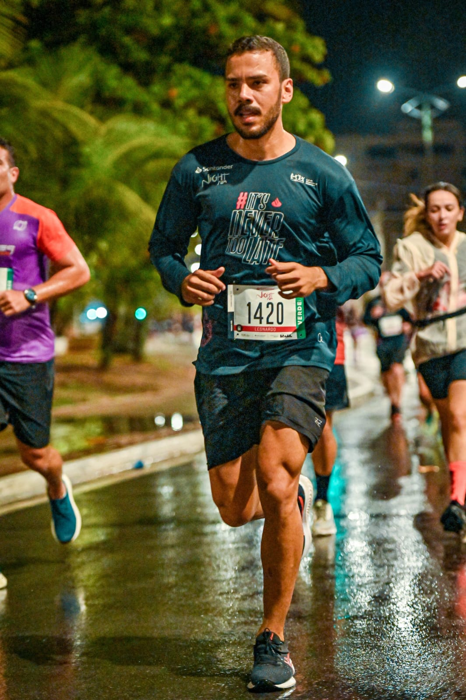
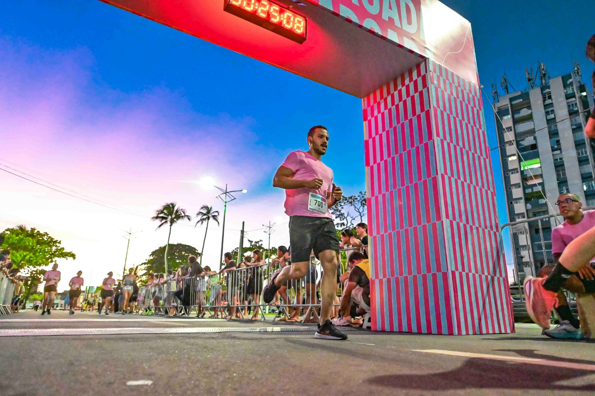
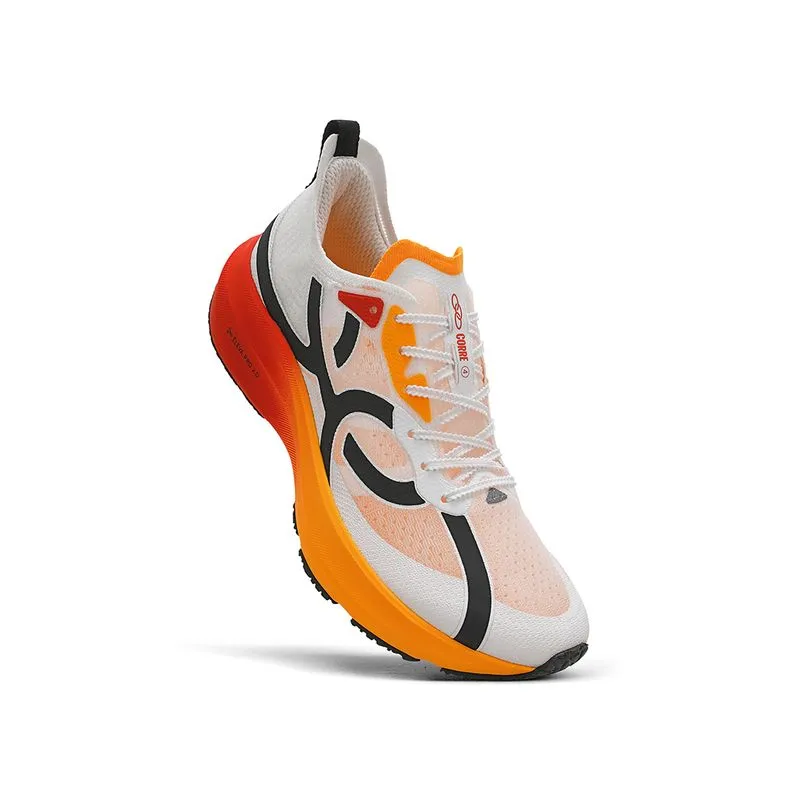
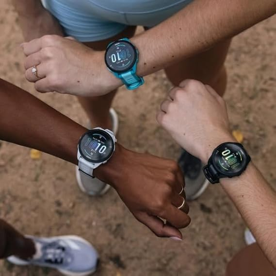
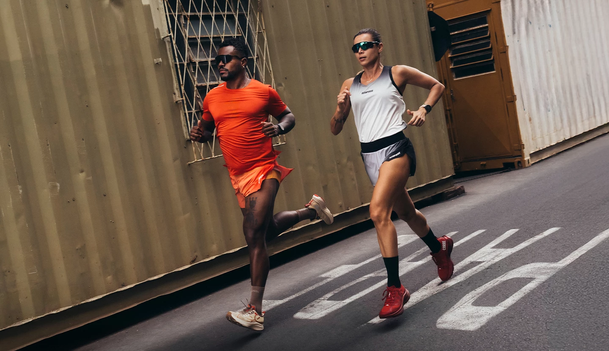
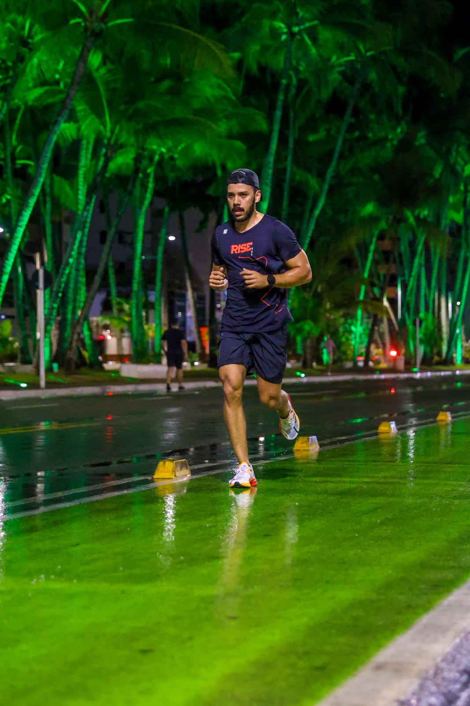
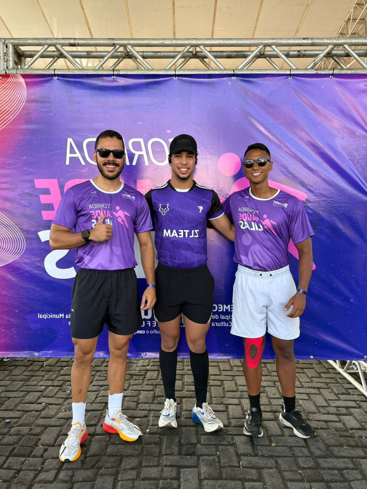
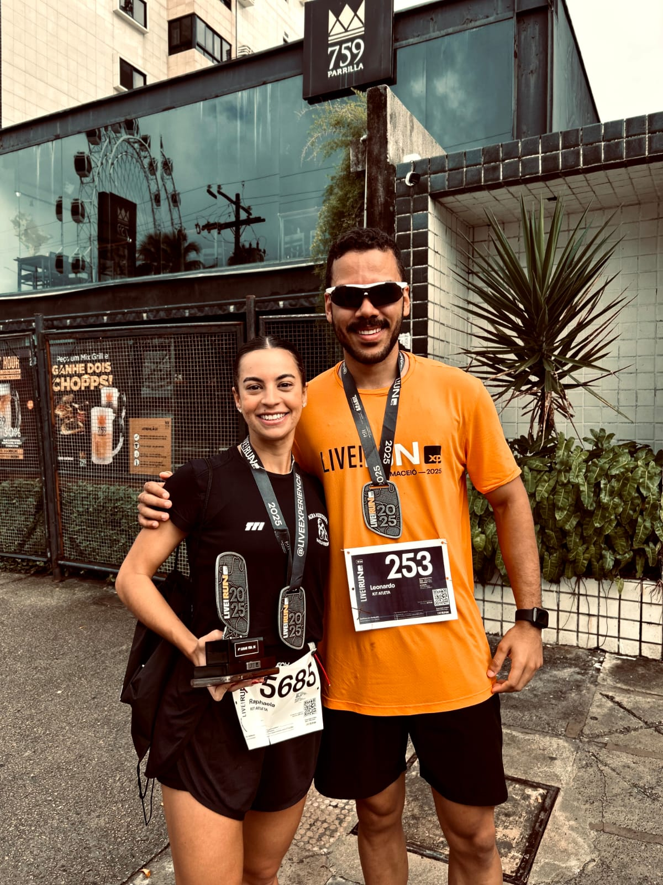

A corrida de rua é uma modalidade de atletismo praticada em vias públicas, como ruas, avenidas ou parques. Ela abrange desde corredores amadores até profissionais, com distâncias oficiais comuns de 5 km, 10 km, meia maratona (21 km) e maratona (42 km).
Tempo necessário para percorrer 1km. Pace (ou ritmo) na corrida é o tempo que você leva para percorrer um quilômetro, geralmente medido em minutos por quilômetro (min/km).
Seu melhor tempo em determinada distância. É o menor tempo que um corredor já registrou em uma distância específica (como 5km, 10km, meia maratona ou maratona).
Total percorrido durante a corrida. As principais distâncias oficiais são 5km, 10km, 15km, 21.097m (meia maratona) e 42.195m (maratona).


Escolha um modelo confortável para corrida.

Acompanhe pace, distância e evolução.

Use roupas leves e respiráveis.



